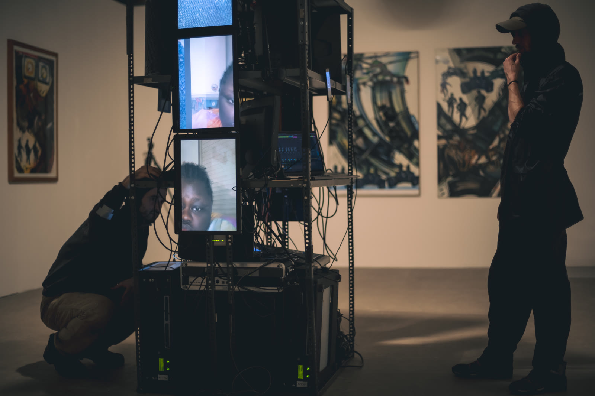
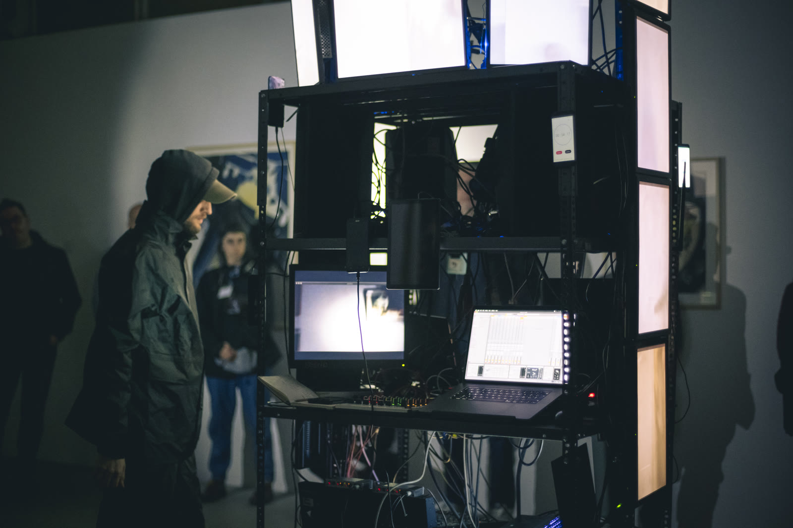
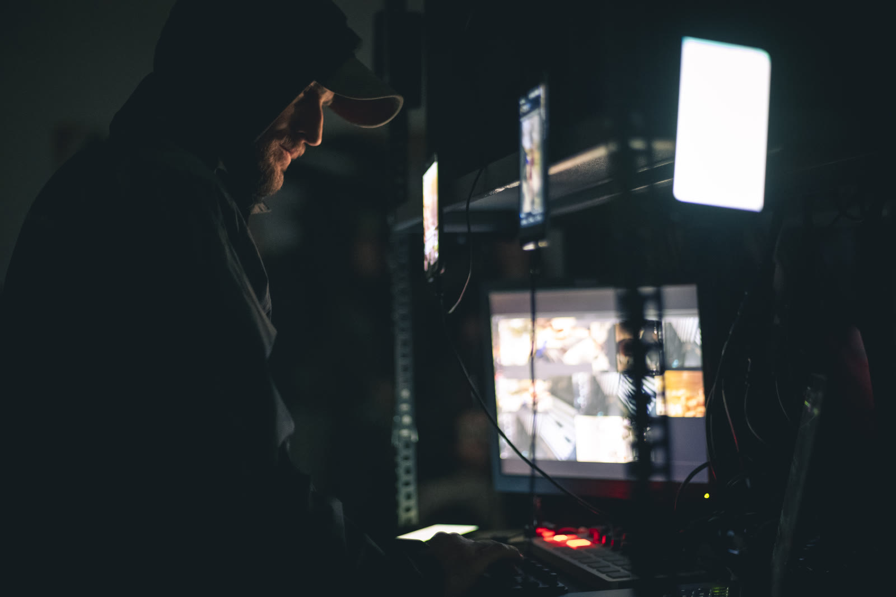
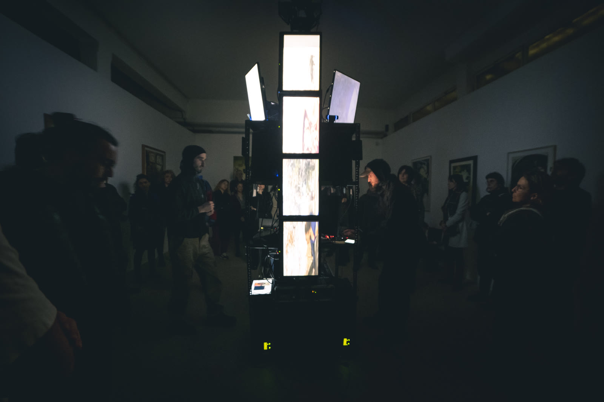

Caosmosi
L'opera esplora il concetto di «caos» e le crisi della contemporaneità attraverso un approccio multimediale. Il lavoro attinge al flusso caotico di piattaforme social come Instagram, raccogliendo frammenti video, foto e suoni per remixarli in un flusso infinito e generare un cosmo virtuale.
L'obiettivo è allontanarsi dalle rappresentazioni realistiche per creare visioni astratte e paradossali, generando nuove forme di soggettività. Il lavoro è stato presentato dal vivo in contesti di musica elettronica e arte contemporanea: nel marzo 2023 alla Galleria Frittelli Arte Contemporanea di Firenze, all'interno della rassegna LAMPI curata dal centro di ricerca Tempo Reale, e al festival MUTEK Montréal.



